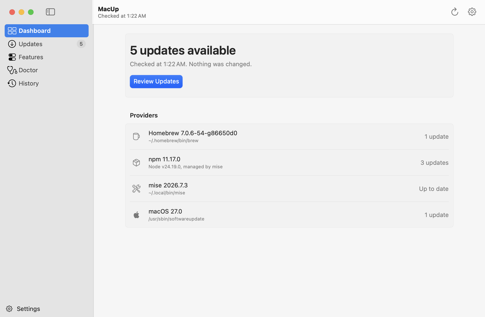
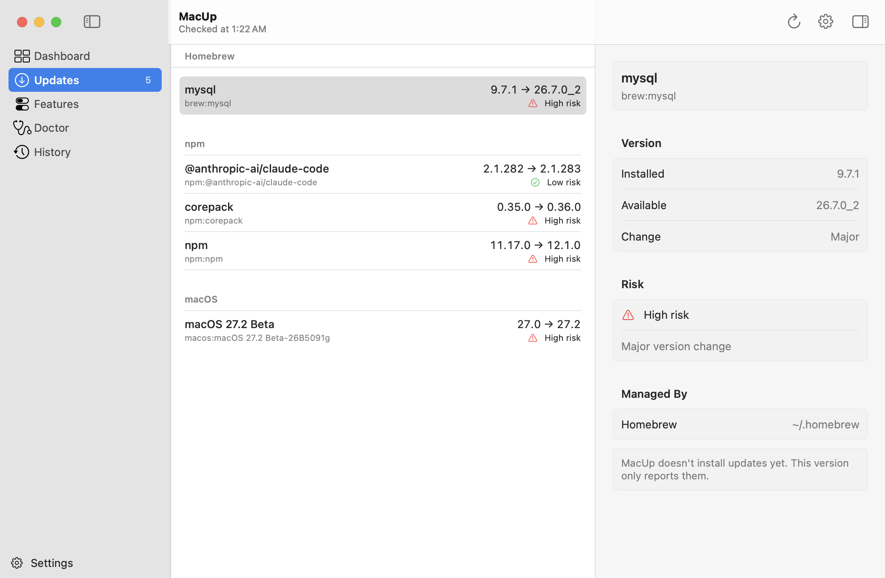
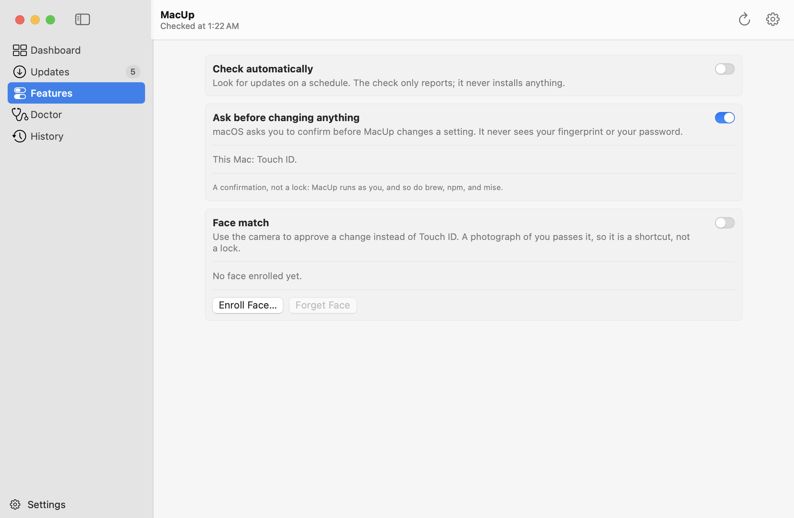

Homebrew, npm globals, mise, and macOS. MacUp tells you what is outdated, who owns it, and what it would run.
brew install sd2389/macup/macup

This version installs, upgrades, and removes nothing. Running a check cannot change a package.
Every command MacUp runs is an executable path and an argument list you can read. There is no shell.
No account, no cloud, no telemetry. What MacUp learns about your Mac stays on it.
Most Macs run several package managers that do not know about each other. MacUp asks all of them and puts the answers in one list.
Formulae and casks, with pins respected and apps that update themselves marked as such.
brew:git
Global packages only, with the exact node and prefix that own them.
npm:@scope/name
Runtimes and tools, with the version range you asked for kept as you wrote it.
mise:node
Software updates listed, including whether a restart is required. Detection only.
macos:27.2
$ macup check MacUp check · read-only · nothing was changed Homebrew 7.0.6 · ~/.homebrew/bin/brew 107 installed · 1 update brew:mysql 9.7.1 → 26.7.0_2 high risk · major mise 2026.7.3 · ~/.local/bin/mise 2 installed · up to date macOS 27.0 · /usr/sbin/softwareupdate macos:macOS 27.2 Beta 27.0 → 27.2 high risk · restart required 2 updates available. Nothing was changed.
Every update says how far it moves, what that means, and who manages it. A major version bump is not filed next to a patch, and a version string that is not SemVer is called unknown rather than guessed at.
Select an update to see the installed version, the available one, and the provider that owns it.


Schedule a check with launchd, as a user agent rather than a root daemon. Ask macOS to confirm with Touch ID before MacUp changes a setting. Each feature says what it does before it asks you to configure it.
The command line has the same features. Neither surface is the afterthought.
Needs macOS 14 or later and the Xcode Command Line Tools. The formula builds from source.
brew install sd2389/macup/macup